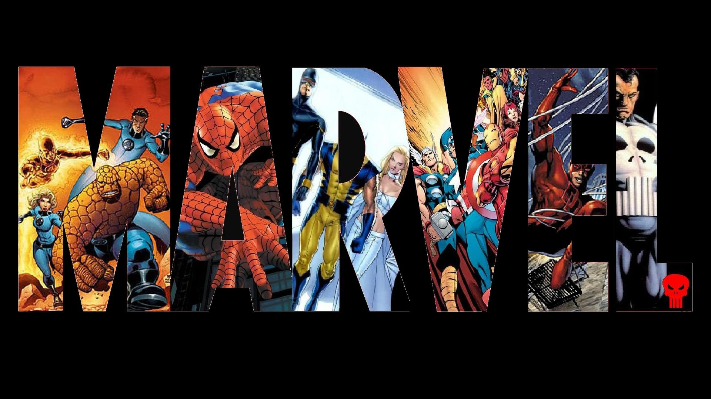

<mat-sidenav-container class="sidenav-container">
  <mat-sidenav #drawer class="sidenav" fixedInViewport
      [attr.role]="(isHandset$ | async) ? 'dialog' : 'navigation'"
      [mode]="(isHandset$ | async) ? 'over' : 'side'"
      [opened]="(isHandset$ | async) === false">
    
    <mat-nav-list class="colorblack" >
      
      <div class="menuList">
        <a mat-list-item href="characters"><span class="menuCenter">CHARACTERS</span></a>
      </div>
        
      <div class="menuList">
        <a mat-list-item href="comics"><span class="menuCenter">COMICS</span></a>
      </div>
        
      <div class="menuList">
        <a mat-list-item href="creators"><span class="menuCenter">CREATORS</span></a>
      </div>
      
      <div class="menuList">
        <a mat-list-item href="series"><span class="menuCenter">SERIES</span></a>
      </div>
    </mat-nav-list>
  </mat-sidenav>
  <mat-sidenav-content>
    <mat-toolbar color="primary">
      <button
        type="button"
        aria-label="Toggle sidenav"
        mat-icon-button
        (click)="drawer.toggle()"
        *ngIf="isHandset$ | async">
        <mat-icon aria-label="Side nav toggle icon">menu</mat-icon>
      </button>
      <span>Marvel Turpial</span>
    </mat-toolbar>
    <router-outlet></router-outlet>
    <!-- Add Content Here -->
  </mat-sidenav-content>
</mat-sidenav-container>
